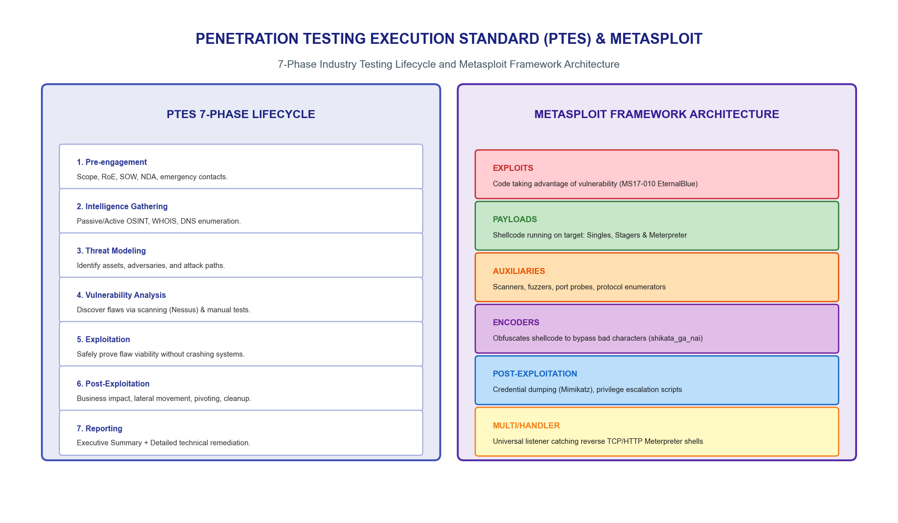
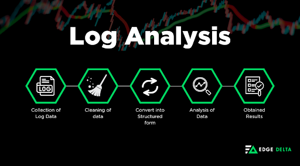
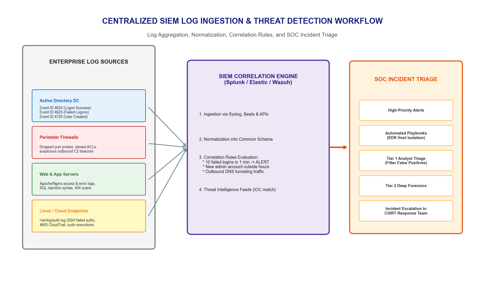
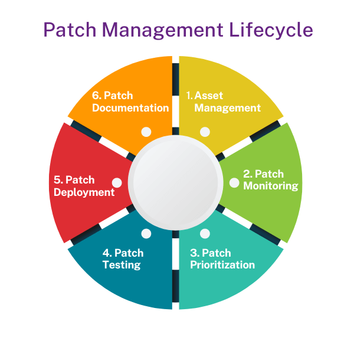
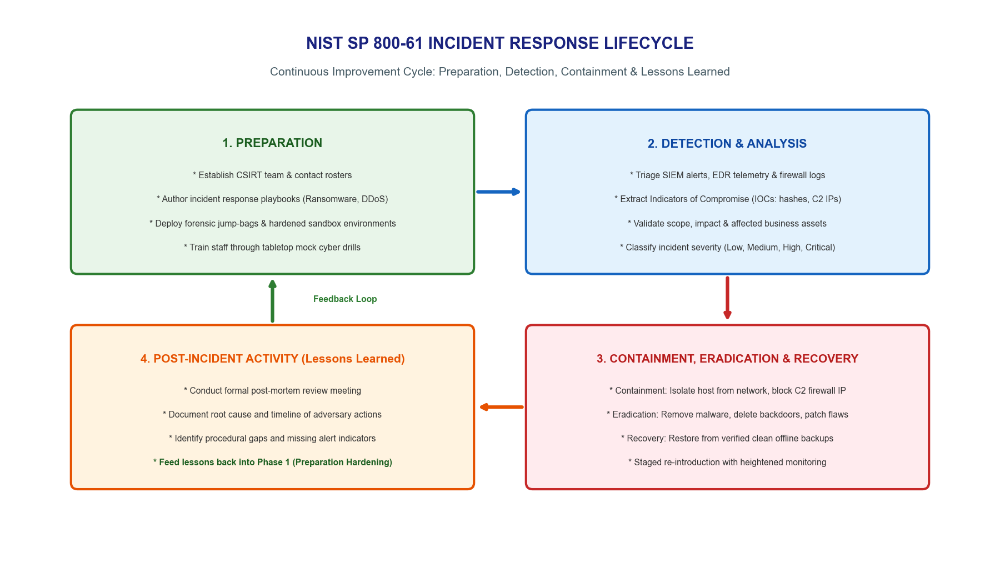
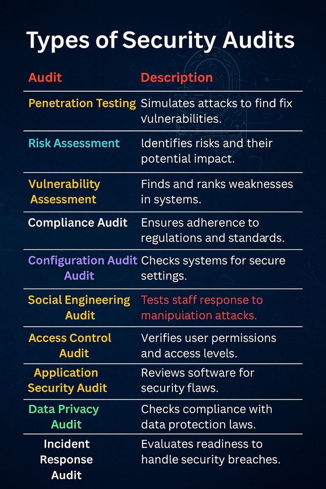
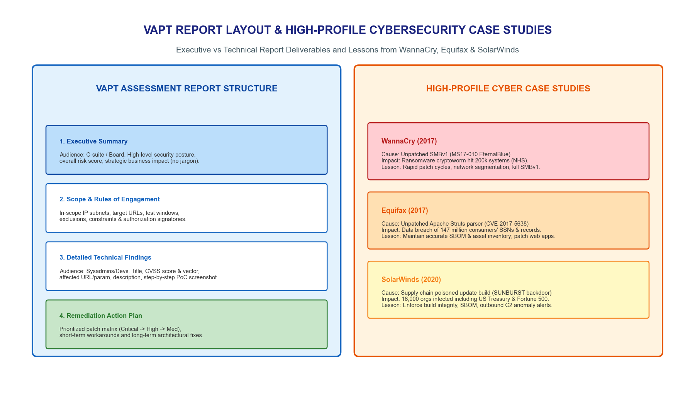
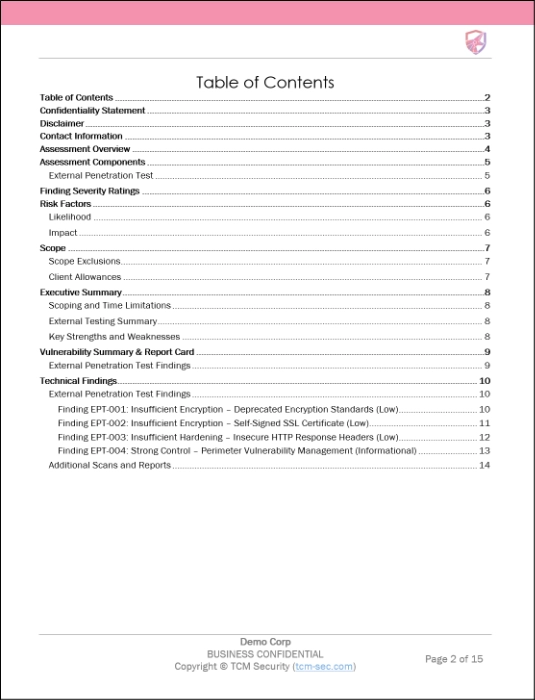
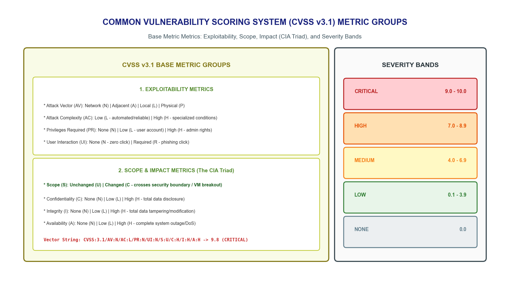

Course: Ethical Hacking (MD) | VIT Pune*
Faculty / Curriculum: AY 2026-27 | Exam Date: 27 Nov 2026
A Penetration Testing Framework provides a structured, repeatable, and legally compliant methodology for simulating real-world cyberattacks against enterprise assets.
+---------------------------------------------------------------------------------------+
| PENETRATION TESTING FRAMEWORKS COMPARISON |
+------------+-------------------------------------------+------------------------------+
| Framework | Core Focus & Purpose | Key Structural Phases |
+------------+-------------------------------------------+------------------------------+
| **PTES** | Complete end-to-end commercial standard | 7 Phases: Pre-engagement to |
| | defining technical testing baselines. | Reporting & cleanup. |
+------------+-------------------------------------------+------------------------------+
| **NIST SP | Federal technical assessment guideline | Planning -> Discovery -> |
| 800-115** | for US government & enterprise auditing. | Attack -> Reporting. |
+------------+-------------------------------------------+------------------------------+
| **OSSTMM** | Open Source Security Testing Methodology; | Operational security metrics,|
| | mathematically quantifiable trust audits. | posture controls & channels. |
+------------+-------------------------------------------+------------------------------+
| **OWASP | Specialized web application security | 12 Categories of web testing |
| WSTG** | testing guide (mapping OWASP Top 10). | (Auth, Session, Input, etc). |
+------------+-------------------------------------------+------------------------------+
| **MITRE | Knowledge base of real-world adversary | Tactics (Goals) and |
| ATT&CK** | behaviors, techniques, and procedures. | Techniques (How executed). |
+------------+-------------------------------------------+------------------------------+

1. Pre-engagement Interactions: Defining legal scope, Statement of Work (SOW), Rules of Engagement (RoE), emergency contacts, testing windows, and NDAs.
2. Intelligence Gathering (Reconnaissance): Passive OSINT, WHOIS, DNS mapping, social engineering research.
3. Threat Modeling: Identifying target assets, business processes, and threat actor profiles (e.g., competitor, hacktivist, ransomware syndicate).
4. Vulnerability Analysis: Discovering flaws via automated scanning (Nessus) and manual probing.
5. Exploitation: Safely proving flaw feasibility by launching functional exploit payloads without causing downtime.
6. Post-Exploitation: Determining business impact (value of accessible data), assessing lateral movement, and privilege escalation.
7. Reporting: Translating findings into actionable executive summaries and technical remediation steps.
Exploitation is the execution of code taking advantage of an identified vulnerability to bypass security boundaries and gain control over target resources.
+-----------------------------+
| METASPLOIT ARCHITECTURE |
+-----------------------------+
│
┌────────────────┬──────────────┼──────────────┬────────────────┐
▼ ▼ ▼ ▼ ▼
[ EXPLOITS ] [ PAYLOADS ] [ AUXILIARY ] [ ENCODERS ] [ POST ]
Remote / Local Singles / Port scanners, Avoids bad chars Priv-Esc,
Buffer overflows Staged / DoS, Fuzzers, (shikata_ga_nai) Credential
SMB / Web RCE Meterpreter Discovery DumpingThe Metasploit Framework (MSF) is the industry-standard exploitation platform:
* Exploits: Modules containing the code that triggers a specific vulnerability (e.g., exploit/windows/smb/ms17_010_eternalblue).
* Payloads: The shellcode executed on the victim machine once the exploit succeeds:
* Singles (Inline): Self-contained standalone payloads (e.g., add user, execute command).
* Stagers: Small payloads that establish a network socket back to the attacker and download a larger Stage payload into memory.
* Meterpreter: Advanced, memory-resident staged payload that runs reflectively in DLL space without touching disk, providing encrypted C2, keystroke logging, screenshot capture, and privilege escalation commands (getsystem).
* Auxiliaries: Modules that do not execute a payload (e.g., port scanners, banner grabbers, vulnerability checkers, brute-force testers).
* Multi/Handler (exploit/multi/handler): A universal listener that catches incoming reverse TCP/HTTP shells from exploited targets.
* Objective: Measure the real-world business impact of a breach:
* What sensitive data (PII, intellectual property, financial databases) is exposed?
* Can the tester escalate privileges to Domain Admin?
* Can the tester pivot from a compromised DMZ server into the internal trusted corporate LAN?
* Pivoting: Routing traffic through a compromised intermediary host to access internal subnets otherwise unreachable from the Internet.
* Ethical Boundary & Cleanup:
* Penetration testers NEVER leave persistent backdoors in production networks.
* Every testing script, temporary account, test file, or registry modification must be documented and completely scrubbed before concluding the engagement.


Security Information and Event Management (SIEM) systems ingest, aggregate, normalize, and correlate security logs across an enterprise in real-time.
[ Domain Controller ] ──► Event ID 4625 (Failed Logins) ──┐
[ Perimeter Firewall ] ──► Port Scan Probe Drops ───┼──► [ Centralized SIEM Engine ]
[ Web Server (Nginx) ] ──► HTTP 500 / Union SQLi Errors ──┤ (Splunk / Elastic / Wazuh)
[ Linux SSH Server ] ──► Failed Auth in /var/log/auth.log┘ │
▼
[ SOC Alert: Spikes & ]
[ Correlation Rules ]* Event ID 4624: Successful Account Logon (Type 2: Interactive, Type 3: Network, Type 10: RDP).
* Event ID 4625: Failed Account Logon (High frequency indicates online brute-force or password spraying).
* Event ID 4720: New User Account Created (Adversary establishing persistence).
* Event ID 4726: User Account Deleted.
* Event ID 4738: User Account Modified (Privilege elevation).
* Event ID 7045: New System Service Installed (Persistence / Priv-Esc).


┌─────────────────────────────────────────────────────────┐
▼ │
[ 1. PREPARATION ] ──► [ 2. DETECTION & ANALYSIS ] ──► [ 3. CONTAINMENT, ERADICATION ]
│ & RECOVERY
▼
[ 4. POST-INCIDENT ACTIVITY ]
(Lessons Learned)The National Institute of Standards and Technology (NIST) defines a 4-phase incident response cycle:
* Establish the Computer Security Incident Response Team (CSIRT).
* Acquire incident response jump-bags, forensic software, and isolated sandboxes.
* Author playbooks for specific attack types (ransomware, DDoS, insider breach).
* Triage alerts from SIEM, EDR, and NIDS to validate whether an event is a genuine security incident.
* Analyze Indicators of Compromise (IOCs: file hashes, malicious C2 IP addresses, suspicious domain beacons).
* Determine incident severity, scope, and affected assets.
* Short-Term Containment: Isolate affected endpoints immediately (disconnect physical network cable, isolate host via EDR, block attacker C2 IP on perimeter firewall) to prevent lateral spread.
* Long-Term Containment: Take forensic disk images (RAM and storage) for legal chain of custody.
* Eradication: Identify the root cause; remove all malware binaries, backdoors, and malicious scheduled tasks; patch the exploited vulnerability; reset compromised credentials.
* Recovery: Restore systems from verified clean, offline backups; re-introduce systems to production in a staged manner with heightened monitoring.
* Conduct a formal post-mortem meeting with executive leadership and technical staff:
* What happened and at what times?
* How well did staff and procedures perform?
* What precursor indicators were missed?
* Update defensive policies, firewall rules, and training programs.


* System Hardening: Applying CIS (Center for Internet Security) Benchmarks. Disabling unnecessary OS services, telnet, and guest accounts.
* Principle of Least Privilege (PoLP): Users and service accounts operate with the absolute minimum rights required for business duties.
* Patch Management: Systematic cycle of asset inventory, vulnerability monitoring, testing in staging, and rapid production deployment.
* Vulnerability & Exploit: Exploited unpatched SMBv1 buffer overflow flaw (EternalBlue, CVE-2017-0143 / MS17-010).
* Mechanism: Self-propagating cryptoworm; scanned internal and external IP subnets on port 445, automatically spreading across 200,000 computers across 150 nations (severely crippling the UK National Health Service - NHS).
* Lessons Learned:
1. Patch critical vulnerabilities promptly (Microsoft had issued patch MS17-010 two months prior).
2. Deprecate and completely disable legacy, insecure protocols (SMBv1).
3. Enforce network segmentation to block lateral worm movement.
* Vulnerability: Remote Code Execution (RCE) in Apache Struts parser (CVE-2017-5638).
* Impact: Theft of sensitive personal and financial data (SSNs, names, birthdates) of 147 million consumers.
* Lessons Learned:
1. Maintain an accurate Software Bill of Materials (SBOM) and asset inventory.
2. Patch internet-facing web frameworks immediately upon CVE disclosure.
3. Deploy file integrity monitoring and internal network segmentation.
* Mechanism: Advanced Persistent Threat (APT29 / Nobelium) breached the build environment of SolarWinds Orion software and inserted a malicious backdoor (SUNBURST) into legitimate software updates signed with genuine digital certificates.
* Lessons Learned:
1. Enforce strict software supply-chain security and build pipeline auditing.
2. Implement zero-trust network monitoring to detect anomalous outbound C2 traffic from trusted servers.
The final deliverable of an ethical hacking engagement is the VAPT Assessment Report.
1. Executive Summary:
* Written specifically for C-level executives, board members, and non-technical stakeholders.
* Summarizes assessment goals, dates, overall security posture, risk breakdown, and high-level strategic recommendations without overwhelming technical jargon.
2. Scope of Assessment & Rules of Engagement:
* Explicitly documents tested IP ranges, URLs, exclusions, testing methodologies, and constraints.
3. Detailed Technical Findings:
* Written for sysadmins and developers. Each finding contains:
* Finding Title and Unique ID (e.g., VULN-01: SQL Injection in User Login).
* Severity Rating (CVSS v3.1 Base Score).
* Affected Host / URI / Parameter.
* Technical Description & Vulnerability Root Cause.
* Step-by-Step Proof of Concept (PoC) with screenshots.
* Real-World Business Impact.
* Detailed, Actionable Remediation Steps.
4. Conclusion & Remediation Roadmap:
* Prioritized action plan categorizing fixes into immediate, medium-term, and long-term milestones.

CVSS provides an open, standardized framework for communicating the characteristics and severity of software vulnerabilities on a scale from 0.0 to 10.0.
+---------------------------------------------------------------------------------------+
| CVSS v3.1 SEVERITY BANDS |
+-------------------------------+-------------------------------------------------------+
| CVSS Score Range | Qualitative Severity Rating |
+-------------------------------+-------------------------------------------------------+
| **0.0** | None |
| **0.1 – 3.9** | Low |
| **4.0 – 6.9** | Medium |
| **7.0 – 8.9** | High |
| **9.0 – 10.0** | **Critical** |
+-------------------------------+-------------------------------------------------------+The Base Score reflects the intrinsic qualities of a vulnerability that are constant over time and across user environments:
* Attack Vector (AV): Reflects the context by which exploitation is possible:
* Network (N - remote internet, highest severity) | Adjacent (A) | Local (L) | Physical (P).
* Attack Complexity (AC): Describes conditions beyond attacker control:
* Low (L - repeatable without special conditions) | High (H).
* Privileges Required (PR): Level of authentication needed:
* None (N - unauthenticated) | Low (L) | High (H - admin rights).
* User Interaction (UI):
* None (N - automated) | Required (R - victim must click link or open file).
* Scope (S): Determines whether a vulnerability in one software component impacts resources in other authority components:
* Unchanged (U) | Changed (C - e.g., virtual machine escape, XSS executing in victim DOM context).
* Confidentiality Impact (C): None (N) | Low (L) | High (H - total database read).
* Integrity Impact (I): None (N) | Low (L) | High (H - total data tampering/modification).
* Availability Impact (A): None (N) | Low (L) | High (H - complete service disruption/DoS).
$$\text{CVSS:3.1/AV:N/AC:L/PR:N/UI:N/S:U/C:H/I:H/A:H} \implies \text{Score: 9.8 (CRITICAL)}$$
(Represents a remote, unauthenticated, zero-interaction Remote Code Execution vulnerability like Log4Shell or EternalBlue).